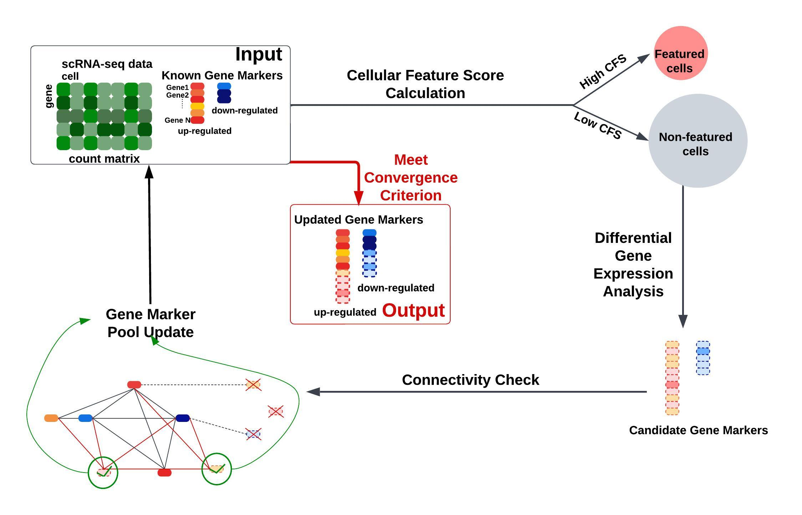

About me
I'm a compuational biologist at Dana-Farber Cancer Institute and Broad Institute. I support Wu Lab in medical oncology department. My research interest lies in developing computational approaches and tools to uncover interesting biological stories from genomics data. The aim is to incorporate genomics technologies to exciting research and advance biologically meaningful knowledge.
Computaional Biology to me is not a career, but a passion, a wisdom, a love to understand the world in which I live. I don't determine each cell's identity. I unravel its degree of commitment to a particular biological fate.
Billboard
actually no billing bc this is made by me
-
✨B-Lightning⚡️
B-Lightning is a novel and robust method designed to identify heterogeneity-source-specific marker genes and the corresponding cell subpopulations that are differentiated by a particular source of heterogeneity (e.g., cell activation state), isolating it from other sources of heterogeneity (e.g., cell type, cell cycle phase).

What i'm doing
-

Computational Genomics
I don't determine each cell's identity but unravel its degree of commitment to a particular biological fate.
-

Chef Philosophy
I furnish food in peace and harmony, with which i am furnished by food.
-

Insipiration Acquisition
I listen and read. I think and create.
-

Love My Life
"Welcome to the real world, it sucks. You are gonna love it."
Highlights
-

mHAgs and GvHD
An analytic framework to systematic Identification of autosomal and Y-encoded mHAgs, including their detection of HLA class I ligandomes and functional verification of immunogenicity.
-
B-Lightning
A novel and robust computational method to dissect cellular heterogeniety by iteratively identify marker genes and cell subpopulations.